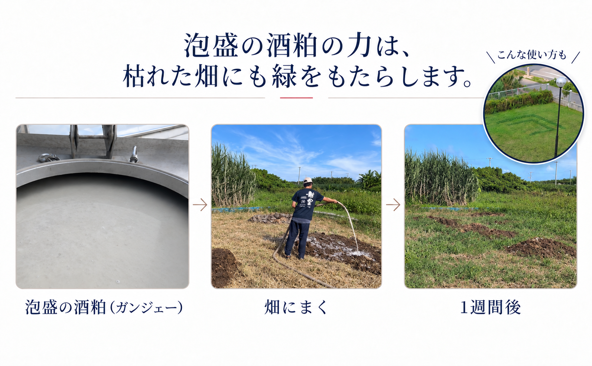
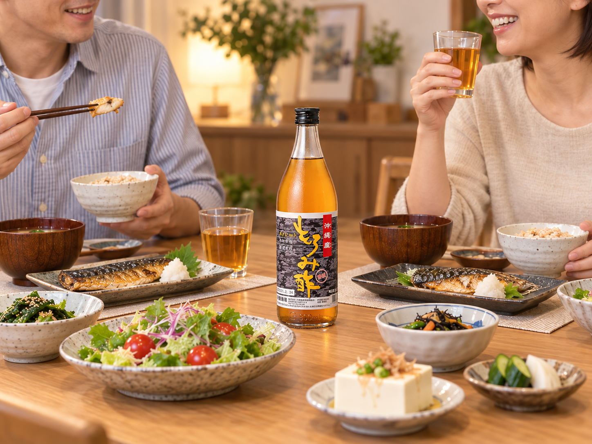
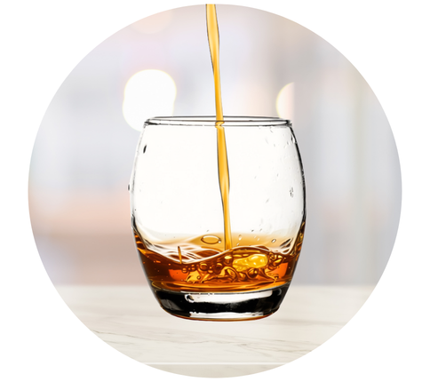
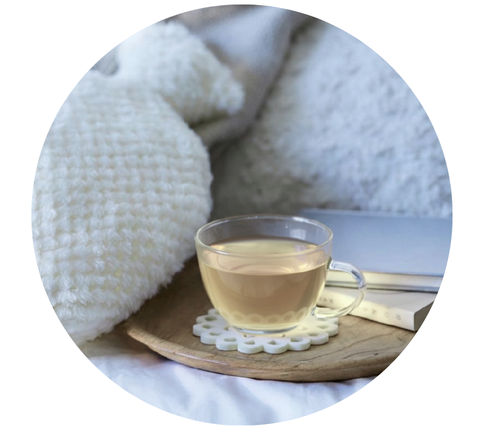
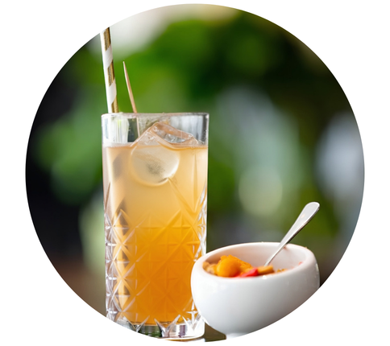
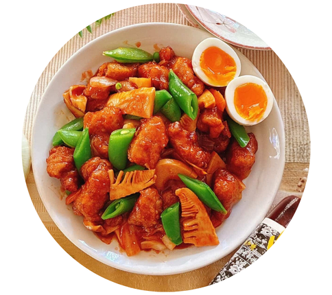

鮮度の良い蒸留粕のみ使用
蒸留直後、その日のうちに圧搾しています。そのため、鮮度が良く、くせの少ない味わいが特徴となっています。
02
ABOUT MOROMI VINEGAR
もろみ酢とは、泡盛を造るときにでる酒粕（カシジェー）を搾ってろ過した飲料です。泡盛特有の黒麹菌の働きによってつくられた クエン酸とアミノ酸が豊富に含まれます。食酢（酢酸）ではないので、匂い・酸味がやわらかく、まろやかで飲みやすいのが特徴です。
もろみ酢は、泡盛の製造工程から生まれる「もろみ」を原料とする飲料。一般的なお酢は、「酢酸」による酸味が残りますが、もろみ酢は黒麹が生成する「クエン酸」による酸味のため、酸っぱさの系統も異なります。
02
MOROMI POWER
泡盛の酒粕（ガンジェー）は、もともと畑の肥料や家畜の餌に使われていました。酒粕をあたえると、畑はいきいきとした緑がすぐに生え、豚や牛は元気になりました。
そこで栄養成分を見てみると、もろみには、複数の種類のアミノ酸とクエン酸が含まれており、人への有効性も判明しました。


04
OUR CRAFT
「新里酒造のもろみ酢が、一番好き。」
そう言ってもらえるために、もろみ酢を20年以上作り続けました。新里酒造のもろみ酢の３つのポイントをご紹介します。
蒸留直後、その日のうちに圧搾しています。そのため、鮮度が良く、くせの少ない味わいが特徴となっています。
もろみ酢は、米麹のみで作る飲料です。商品によっては、黒糖や果汁も追加しますが、皆様の「身体に入れる」ことを意識して、シンプルで優しい食材のみ使用しています。
原料の米麹の状態は、温度・湿度によって日々変化します。もろみ酢の製造歴20年以上の職人の目で、それぞれの特性・環境を変化にあわせて調整しています。
05
INGREDIENTS
黒麹菌の働きにより、天然のクエン酸が豊富に生成され、さらに体内で作れない9種類の必須アミノ酸を含む計18種類のアミノ酸が含まれています。
CITRIC ACID
泡盛の製造過程でつかわれる黒麹菌から生成される成分。爽やかな酸味成分となる。100mlあたり、無加糖・黒糖入りは1000ml、沖縄の活力は、1100mlのクエン酸が含まれます。
クエン酸とは？
クエン酸（クエンさん、枸櫞酸、citric acid）は、柑橘類などに含まれる有機化合物で、ヒドロキシ酸のひとつである。柑橘類の酸味は主にクエン酸の味による。
AMINO ACIDS
私たちの身体をつくる、たんぱく質を構成する成分。体内ではつくられない必須アミノ酸も生成されます。
必須アミノ酸とは？
必須アミノ酸（ひっすアミノさん、Essential amino acid、EAA）とは、タンパク質を構成するアミノ酸のうち、その動物の体内で充分な量を合成できず栄養分として摂取しなければならないアミノ酸のこと。必要アミノ酸、不可欠アミノ酸とも言う。
18 AMINO ACIDS
※商品によって、栄養成分の含有量が若干異なります。詳しくは各商品表示をご確認ください。
05
PRODUCTS
味わい方や飲みやすさの好みに合わせて、3つのタイプから選べます。
06
HOW TO ENJOY
そのままだけでなく、いつもの飲み物や食事に合わせて気軽に。

01

02

03

04
08
PROCESS
米に水を浸漬させて、ふっくら蒸します
黒麹菌がデンプンを分解、生麴後期に温度が下がってくるとクエン酸を作ります
黒麹菌が「クエン酸」を生成。酵母はアルコールを作り終わると、「アミノ酸」を放出します
アルコールを抽出。ここで泡盛が作られますが、栄養素はもろみに残ります
残ったもろみを新鮮なうちに絞り、もろみ酢の原液に
透明にするためのろ過や、熱をかけ、十分に殺菌
完成したもろみ酢を充填。ラベル張りや化粧箱に入れて製品化
09
CUSTOMER VOICE
実際のレビューを掲載する際は、味・飲みやすさ・続け方などの内容を中心に掲載しています。医薬品医療機器等法（旧薬事法）に基づき、身体への変化や具体的な効果効能に関する表現は控えさせていただいております。
ツンとする刺激や独特のクセが一切ないため、お水や炭酸で割るアレンジはもちろん、そのまま飲むスタイルでも十分に美味しく飲みやすいです。酸っぱすぎるものが苦手な方やお子様、ご年配の方まで、年齢を問わず幅広い世代で無理なく美味しく続けられると思います。
本製品が届き、説明書を読むと、付属のカップに30mlを注いで飲むとあります。「えっ？そのまま飲むの？」と半信半疑のまま、思い切って口に含むと…「あれっ！あまり酸っぱくないぞ？」というか、結構芳醇でいける味です。酢特有の酢酸系のツーンとした臭いはありません。一般的な健康食品の「酢」に対する自分のこれまでのイメージが払拭されました。
砂糖無使用で味も酸味が穀物酢ほど強過ぎないため使いやすいです。個人的には餃子や油淋鶏や酢豚みたいにお酢の代わりに使ったりしてますし、麺つゆとごま油とこの商品を合わせて和風ドレッシングや冷やし中華のタレみたいにして使ったりしてます
10
FAQ
購入前に気になりやすいポイントをまとめました。
12
ABOUT SHINZATO SHUZO
1846年創業。新里酒造は、沖縄の酒文化を受け継ぎながら、泡盛をはじめ、地域に根ざしたものづくりを続けています。
新里酒造について ↗